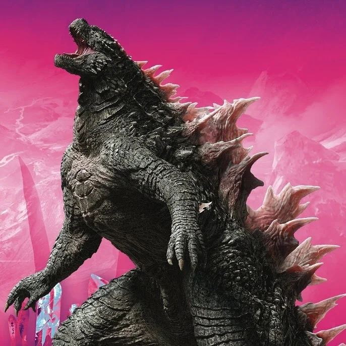
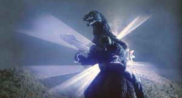
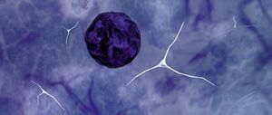

Información del Personaje
Origen:La Isla de Odo
Altura: 31.7 metros
Peso: 60 toneladas
Alianza: Aliado Volatil
Historia
Godzilla es una de las entidades kaiju más antiguas y poderosas registradas por la WKDF. Se teoriza que su origen se remonta a eras prehistóricas, cuando dominaba el equilibrio ecológico del planeta. Su bióloga desconocida sugiere que ha sobrevivido a cataclismos y ha evolucionado para resistir amenazas tanto naturales como artificiales.
Godzilla ha sido un factor determinante en la contención de amenazas mayores, incluyendo otros kaijus hostiles y entidades de origen extraterrestre. Sin embargo, su relación con la humanidad es ambigua, ya que su acción destructiva es impredecible y está basada en la restauración del equilibrio natural, lo que no siempre favorece a la civilización humana.
Godzilla es un equilibrio entre la vida y la destrucción. No es un aliado confiable ni un enemigo a combatir sin consecuencias catastróficas. La WKDF lo reconoce como una fuerza de la naturaleza que debe ser monitoreada, entendida y, en la medida de lo posible, respetada para evitar escaladas de conflicto innecesarias.
Protocolos de Interacción
1.Evitar confrontación directa: Godzilla no responde bien a ataques percibidos como hostiles.
2.Monitoreo constante: Su patrullaje oceánico debe ser analizado para prever posibles zonas de aparición.
3.Evaluar potencial de alianza: En presencia de amenazas kaiju mayores, Godzilla podría actuar en favor de la humanidad.
4.Establecer zonas de exclusión: Evitar actividades humanas en territorios donde se ha identificado su presencia frecuente.
Imagen del Sujeto
Habilidades
Aliento Atomico
El arma distintiva de Godzilla es el distintivo rayo de calor atómico que dispara por la boca. Sus aletas dorsales brillan de forma amenazante, y luego libera una ráfaga concentrada de radiación por la boca. El Aliento Atómico puede derretir, quemar o hacer estallar casi cualquier cosa.
Pulso Nuclear
Además de su aliento atómico muy letal, Godzilla también puede emitir energía atómica en todas direcciones desde cada centímetro de su cuerpo en un ataque de corto alcance denominado Pulso Nuclear.
Regeneracion
Godzilla posee una capacidad regenerativa extremadamente avanzada y eficiente. Investigaciones posteriores revelan que sus capacidades regenerativas podrían estar relacionadas con sus propiedades radiactivas, y que Organizador G-1 es el nombre que recibe una sustancia en sus células responsable de su rápida curación, permitiéndole sobrevivir a golpes mortales con facilidad.
Videos de Metraje Encontrado
Video de Evidencia 1: Godzilla ataca a Ginza
Video de Evidencia 2: Godzilla vs MUTO
Video de Evidencia 3: Godzilla entra modo atomico y destruye a King Ghidorah
Video de Evidencia 4: La muerte de un Godzilla y el renacer de un nuevo rey.